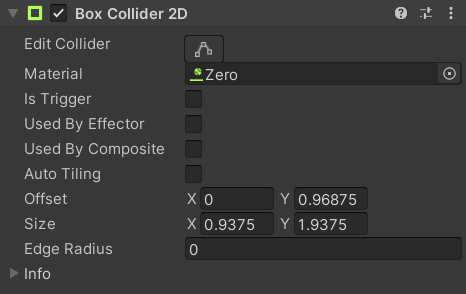

Character physics is managed by several components:
| Component | Purpose |
|---|---|
| Collider | Defines the character's shape for interacting with the environment. |
| Rigidbody | Manages the Collider's movement and prevents it from going inside other objects. |
| Character Body | Provides the rest of the character (particularly States and Brains) with access to the Collider, Rigidbody, and details such as whether or not they are currently standing on the ground. |
| Character Movement | Controls the character's Velocity in accordance with the input from their Brain, movement constraints of their current State, and their movement stats like Speed. |
Collider
Characters use a BoxCollider2D for their collisions. Some platformer games use a capsule or diamond shape, but for pixel art characters like the ones used here it makes the most sense for the physical shape to be a box that aligns perfectly with the character's feet in the Idle animation so they can stand on the edge of a platform properly.
Due to the physics engine's Default Contact Offset (which should not be changed) colliders resting on top of each other actually end up with a small gap between them. To counteract this, the Y position of every character's Sprite object is set to -0.01 so that they look like they are properly on the ground even when their collider is slightly above it.
The Physics Material has its Friction and Bounce both set to 0.

Rigidbody
Characters use a Rigidbody2D with the following settings:
The reasons for those settings are described in the following table (grouped by association rather than in the same order as the Inspector):
| Field | Value | Reason |
|---|---|---|
Body TypeSimulated |
DynamicEnabled |
We want Unity to handle collision checking and resolution for us. |
Use Auto MassMass |
False1 |
We aren't doing any collisions between dynamic rigidbodies so mass won't be used for anything. Such collisions could potentially be implemented (consider making a Feature Request), but would not currently respect the mass of each object. |
MaterialLinear Drag |
Zero0 |
We want to fully control the character's grip, acceleration, and deceleration. This is the same Material assigned to the Collider with Friction and Bounce both set to 0 |
Angular DragConstraints |
0.05Freeze Rotation |
The system doesn't currently support rotated characters so the rotation is locked and drag is left at its default value. Consider making a Feature Request if you would like rotation to be supported in a future version. |
Gravity Scale |
2.5 |
Characters in a platformer game can jump far higher than people in real life, so they also need stronger gravity to prevent the game from feeling "floaty" (unless that's what you actually want). |
Collision Detection |
Continuous |
More accurate physics and tries to prevent characters from passing through other objects at high speeds. This could be set to Discrete to improve performance. |
Sleeping Mode |
Start Awake |
Unity will automatically stop simulating physics for stationary objects to save performance. This system treats a sleeping rigidbody as if it were on the ground so we don't want a character to be asleep on the first frame in case they are actually in the air. |
Interpolation |
Interpolate |
We want character movements to appear as smooth as possible even though the actual physics simulation is only run at a fixed rate. |
A MawFlower is a plant enemy which doesn't move, so it doesn't have a Rigidbody2D at all.
Character Body
Every character that can move has a CharacterBody2D component which manages the movements of a character. It has references to a Collider and Rigidbody, as well as properties to access its Position, Velocity, and various other details, but perhaps most important is the IsGrounded property which other scripts can use to check if the character is currently touching a surface that is considered to be ground.
| Component | Inspector |
|---|---|
The base |
|
The BoxCharacterBody2D component Inherits from the base CharacterBody2D. It performs ground checking and step detection as explained in the table below. |
|
| A MawFlower is a plant enemy which doesn't move, so it doesn't have any Character Body component. | |
Box Character Body
| Field | Description |
|---|---|
Collider |
A reference to the character's BoxCollider2D component. |
Rigidbody |
A reference to the character's Rigidbody2D component. |
Grip Angle |
Determines how steep a slope can be to still count as ground. Any steeper than that and the character will slide down as if it were a wall. The value is measured in degrees. This doesn't really get used in the example scenes because they don't have any slopes, but the videos below show what it looks like. |
Step Height |
When a character is grounded and tries to move towards a surface that is within this distance up or down, they will automatically snap to it and remain grounded instead of being blocked by it (like a wall) or becoming airborne (like a ledge). This value should be slightly larger than the actual height of your steps to allow for minor inaccuracies in the floating point math used by the physics engine. The video below shows this feature in action. |
Verify Available Space |
Enabling this adds a small performance cost to more reliably prevent the object from moving into areas where it doesn't quite fit. Otherwise attempting to move into such an area can cause it to jitter back and forth. |
Debug Line Duration |
Determines how many seconds scene view debug lines are shown for this object. This field only exists in the Unity Editor since it would not do anything in a runtime build. |
Here's what a Grip Angle of 49 degrees looks like:
| 45 Degrees = Grip | 50 Degrees = Slip |
|---|---|
Here's a video of the Step Height in action:

Ground Character Movement
This component is used by most characters and controls their velocity according to the following factors:
- The horizontal
CharacterBrain.MovementDirectiondetermines which direction the character's Brain wants to move them (and how fast in case the player is using a controller with the joystick not tilted all the way). - The
CharacterBrain.Runflag determines whether theWalk SpeedorRun Speedis used. - That speed is multiplied by the
CharacterState.MovementSpeedMultiplierof the character's current State.- For example,
LocomotionStateandJumpStatehave a multiplier of1to allow movement at the character's full speed whileAttackStateandDieStatehave a multiplier of0to prevent characters from moving while attacking, getting hit, or dying.
- For example,
- The
CharacterBody.IsGroundedand theCharacterBrain.Rundetermine which of the Smoothing values are used. TheGrip Frictionalso affects the Smoothing based on theFrictionof the ground's Physics Material as explained in the table below. - It also accounts for the velocity of whatever platform the character is standing on so that characters can stand still and move around properly on moving platforms.
| Ground Friction | Effect |
|---|---|
Ground Friction >= Grip Friction |
Uses the full smoothing value described above. |
Ground Friction == 0 |
Uses the Frictionless Smoothing value instead. This is applied on slippery surfaces such as Ice and it's generally good to keep this value equal to the Air Smoothing so that the character has the same degree of control over their movements on a slippery surface as when they are airborne. |
0 < Ground Friction < Grip Friction |
A proportional result between the full value described above and the Frictionless Smoothing. |
Air Character Movement
This component is used by the Gobbat enemy and controls its velocity according to the following factors:
- The
CharacterBrain.MovementDirectiondetermines which direction the character's Brain wants tomove them (and how fast in case the player is using a controller with the joystick not tilted all the way, though this component iscurrently only used by the Gobbat enemy). - The
CharacterState.MovementSpeedMultiplieris used just like in theGroundCharacterMovementcomponent. - The
Horizontal Speeddetermines the target left/right speed. - The
Ascent Speeddetermines the target speed while moving upwards and theDescent Speeddoes the samewhile moving downwards.
Smoothing
The Smoothing fields in the character movement components determine how long the character takes to reach their desired speed. Here's what the player's smoothing values look like in slow motion (because it's hard to get a feel for the actual movements from just a video):
| Walk (0 Smoothing) | Run (0.15 Smoothing) | Ice (0.3 Smoothing) |
|---|---|---|
| 0 gives instant acceleration. You immediately start moving at full speed whenever you change direction. | 0.15 makes the character slide a bit when changing directions so you have less fine control while running. | 0.3 causes even more sliding on ice and in the air. |